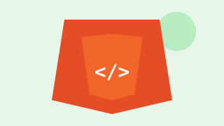
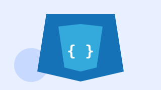
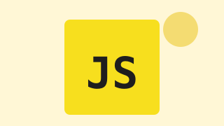
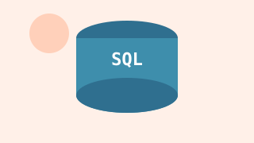
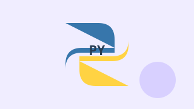

HTML: мова структури
HTML задає структуру вебсторінки та описує її зміст за допомогою елементів.
Теми для вивчення:
- Семантичні теги
- Посилання та зображення
- Форми й таблиці
Практичне завдання: створити структуровану сторінку.
Оберіть тему та перегляньте її основні напрямки й практичне завдання.

HTML задає структуру вебсторінки та описує її зміст за допомогою елементів.
Теми для вивчення:
Практичне завдання: створити структуровану сторінку.

CSS визначає вигляд сторінки, оформлення елементів та їхнє розташування.
Теми для вивчення:
Практичне завдання: оформити сторінку за допомогою таблиці стилів.

JavaScript додає логіку та реакцію на події користувача у вебінтерфейсі.
Теми для вивчення:
Практичне завдання: створити інтерактивний проєкт.

SQL використовують для пошуку, фільтрування та поєднання даних у базах.
Теми для вивчення:
Практичне завдання: скласти запити до бази даних.

Python допомагає розв'язувати завдання за допомогою зрозумілого та виразного коду.
Теми для вивчення:
Практичне завдання: написати корисний скрипт.